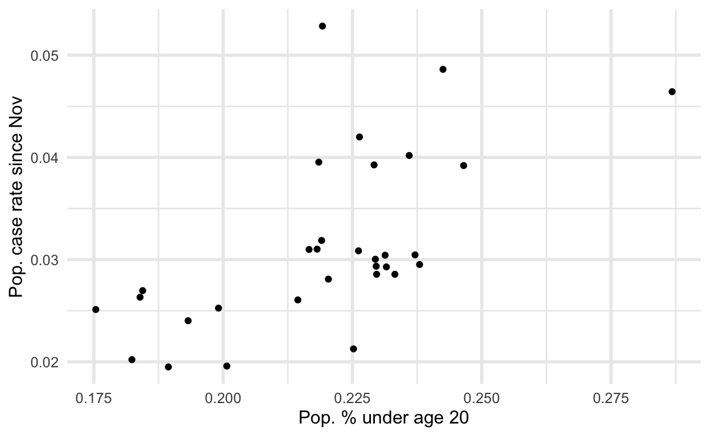

TL;DR
- London Boroughs with the highest recent infection rates also have younger populations
- Since September the infection rates have remained highest and increased fastest for school aged children
- The observation that the new variant has not broken out in some regions could be explained by these regions experiencing their school-based outbreaks earlier in the season with a different variant
Cases and age across London Boroughs
The new SARS-nCov-2 variant drawing much attention from international media saw most of its recent growth in London and nearby regions, so lets look at London first. We can plot the rate of new COVID cases after 1 November compared to the proportion of each Boroughs population under age 20 using PHE data on cases and ONS data for population demographic estimates (age, specifically)

This plot is a rough summary of observational data, but it seems pretty clear that the rate of new COVID cases is lower in boroughs with proportionally less children, and higher in those with more children. This plot does not distinguish cases of the new variant from other cases. However, the focus here is on London where the new variant rapidly took over recently, so the majority of new cases here are of the new variant.
Age group and infection rates
The ONS COVID survey provides estimates using random sampling of the population. Unlike data from cases, this should be less influenced by selection biases from people deciding whether or not to go get tested. Unfortunately there was no breakdown by age group and region, or by age group and new/old variant. But we can see from this data that the overall infection rates have remained consistently higher for school aged children and young adults. These younger groups also experienced the most rapid increase in infection rates in December during the same period that the new variant became more prevalent.

Thanks to Dan Cookson who brought my attention to this data1 from test results. I do not believe this data comes from a representative survey, so it could be biased by whatever factors cause people to get tested or not. On the plus side, it has more detailed spatial resolution for different age groups, so we can see test results by age group in different regions of England. Dan pointed out that some regions which are not currently seeing high infection rates among young people did so earlier in the season.
Comparing the two explanations
We saw an explosion of cases, centered in London, after the November lockdown ended. The biological theory attributes this to a new variant of the virus being more transmissible. The social theory Im considering in this post attributes the same observation to community transmission enabled by schools remaining open, without any important biological difference.
There are other regions of England which are not experiencing the same explosion of cases as London. Both of these theories have to contend with this fact.
- The biological theory would say that its only a matter of time before the new variant does take over in other regions
- The school theory can point out that (at least some of) these other regions had outbreaks earlier in the season, so people may have changed school policy / behavior already
Perhaps these earlier outbreaks among young people also explain the prevalence of a different strain that was predominant before the current variant broke out in the London area. The previous strain accounted for around 2/3 of cases between September and late October.
And just for one closer comparison, here is London and another region which had an earlier outbreak:

Age group and new variant odds
So far weve only considered data which does not distinguish between the different variants. Now well conclude with another piece of evidence showing associations between age and the new variant specifically, although I do not have access to the data this is based on. This analysis by Imperial College, PHE, COG-UK and others, showed that among COVID cases those in age groups under age 20 were more likely to have tests consistent with the new variant. It also appears that adults in the age range most likely to have children in school might have slightly higher rates, and that all other age groups had relatively lower rates.

(A) Age distribution of S- and S+ cases. (B) Ratio of S- to S+ proportions of cases in each 10 year band. Results shown are for weeks 46-51. Ages were capped at 80.
Conclusion
Since the beginning of this story about a new variant I consistently stressed that even without knowledge of any different strains we already knew case numbers were increasing and more actions were necessary. I think this new variant story has been a distraction.
There is a tenable alternative theory to the current narrative about mutations conferring increased transmission. This B.1.1.7 variant might just be the strain that was most prevalent in schools in and around London going into the November lockdown. The fact that this variant continued to spread during the lockdown has been one of the key pieces of evidence for the claim that it is more contagious. But if schools remaining open explains that observation we can conclude two things. First, we may not need any additional biological explanation. And second, the biological explanation may in fact be a harmful distraction from the important conclusion that widespread community transmission can continue throughout lockdowns if schools remain open. Instead of focusing on random mutations we should be focusing on what concrete actions those with power can take to stop the spread.
More work needs to be done to further elaborate this social explanation and show it can better explain all the facts than the biological explanation.
Code for reproducibility
For downloading the population data with counts of persons of various ages.
# library(tidyverse)
download_filename <- "UK_population.xls"
download.file(
url = paste0(
"https://www.ons.gov.uk/file?uri=",
"%2fpeoplepopulationandcommunity%2f",
"populationandmigration%2fpopulationestimates",
"%2fdatasets%2fpopulationestimatesforukenglandand",
"walesscotlandandnorthernireland%2fmid2019april2020",
"localauthoritydistrictcodes/ukmidyearestimates",
"20192020ladcodes.xls"),
destfile = download_filename)
UK_age_pop <- readxl::read_xls(download_filename,
col_names = TRUE,
sheet = "MYE2 - Persons",
range = "A5:CQ431")
deleted <- file.remove(download_filename)
n_age_0_19 <- UK_age_pop %>%
select(num_range("", 0:19)) %>%
mutate(total = rowSums(.)) %>%
pull(total)
UK_pop <- UK_age_pop %>%
select(matches("[A-Z]")) %>%
mutate(pop_019 = n_age_0_19, pop = `All ages`) %>%
select(-`All ages`)
For downloading London COVID case data, filtering to recent cases, merging with population demographic data.
london_covid <- read_csv(
paste0("https://data.london.gov.uk/download/coronavirus",
"--covid-19--cases/151e497c-a16e-414e-9e03-9e428f555ae9/",
"phe_cases_london_boroughs.csv")
london_recent <- london_covid %>%
filter(date > "2020-11-01") %>%
group_by(area_name) %>%
summarize(recent_cases = sum(new_cases))
london_covid_age <- inner_join(
UK_pop, london_recent,
by = c("Name" = "area_name")) %>%
mutate(
prop_child = pop_019 / pop,
recent_rate = recent_cases / pop)For infection rates by age from ONS data
download_filename <- "covid_positivity_update.xlsx"
download.file(
url = paste0(
"https://www.ons.gov.uk/file?uri=",
"%2fpeoplepopulationandcommunity%2f",
"healthandsocialcare%2fconditionsand",
"diseases%2fdatasets%2fcoronaviruscovid19",
"infectionsurveydata%2f2020/covid19infection",
"surveydatasets2020122423122020174305.xlsx"),
destfile = download_filename)
c19rates_update <- readxl::read_xlsx(download_filename,
col_names = TRUE,
sheet = "1g",
range = "A7:V49")
deleted <- file.remove(download_filename_update)
names(c19rates_update) <- c("date",
do.call(paste,
expand.grid(
c("positive", "lower", "upper"),
c("Age2to10",
"Age11to15",
"Age16toAge24",
"Age25to34",
"Age35to49",
"Age50to69",
"Age70+")
)
))
c19_long_update <- c19rates_update %>%
pivot_longer(!date) %>%
separate(col = name, sep = " ",
into = c("est", "age")) %>%
pivot_wider(names_from = est, values_from = value)
For case data by age and region:
covid_specimens <- read_csv("download the giant file and put it here")
covid_spec_age <- covid_specimens %>%
filter(areaType %in% c("region", "utla"),
date > "2020-09-01",
age %in% c(
"0_4",
"5_9",
"10_14",
"15_19",
"20_24",
"25_29",
"30_34",
"35_39",
"40_44",
"45_49",
"50_54",
"55_59",
"60_64",
"65_69",
"70_74",
"75_79",
"80_84",
"85_89"))
# uncomment to free up memory
#rm(covid_specimens)
covid_age <- covid_spec_age %>%
separate(col = age, sep = "_",
into = c("agel", "ageu")) %>%
mutate(agel = as.numeric(agel),
ageu = as.numeric(ageu),
Age = cut_interval(agel, length = 10)]
) %>%
group_by(areaType, areaName, date, Age) %>%
summarize(smoothed_cases = sum(newCasesBySpecimenDateRollingRate))
#omg the name is too long
covid_age$areaName[covid_age$areaName ==
"Yorkshire and The Humber"] <- "Yorkshire&Humber"
covid_age %>%
filter(areaType == "region") %>%
select(areaName, date, Age, smoothed_cases) %>%
drop_na() %>%
ggplot(etc)Finally, for anyone curious for more of the details involved in the age odds ratios calculation this is the caption for Figure 4 in that paper:
To assess differences in the age distribution of VOC versus non-VOC cases, we considered S-and S+ case numbers in weeks 46-51 across NHS STP regions. Case numbers were standardised for differences in the population age composition in each area, weighted to compare S- cases from each NHS STP region and each epidemiological week with an equal number of S+ cases from that same STP and week (a case-control design), and aggregated over STP weeks. Accounting for binomial sampling variation and variation by area and week,we observe significantly more S- cases, our biomarker of VOC cases, among individuals aged 0-19